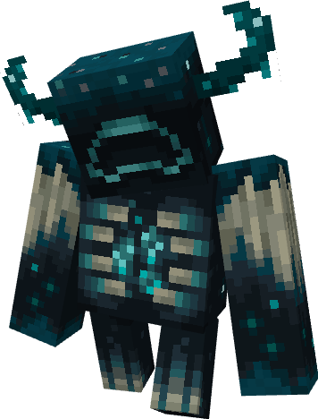
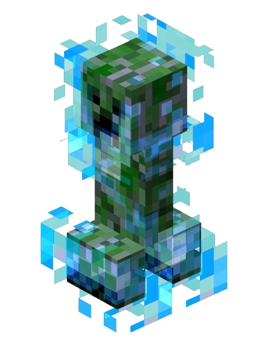
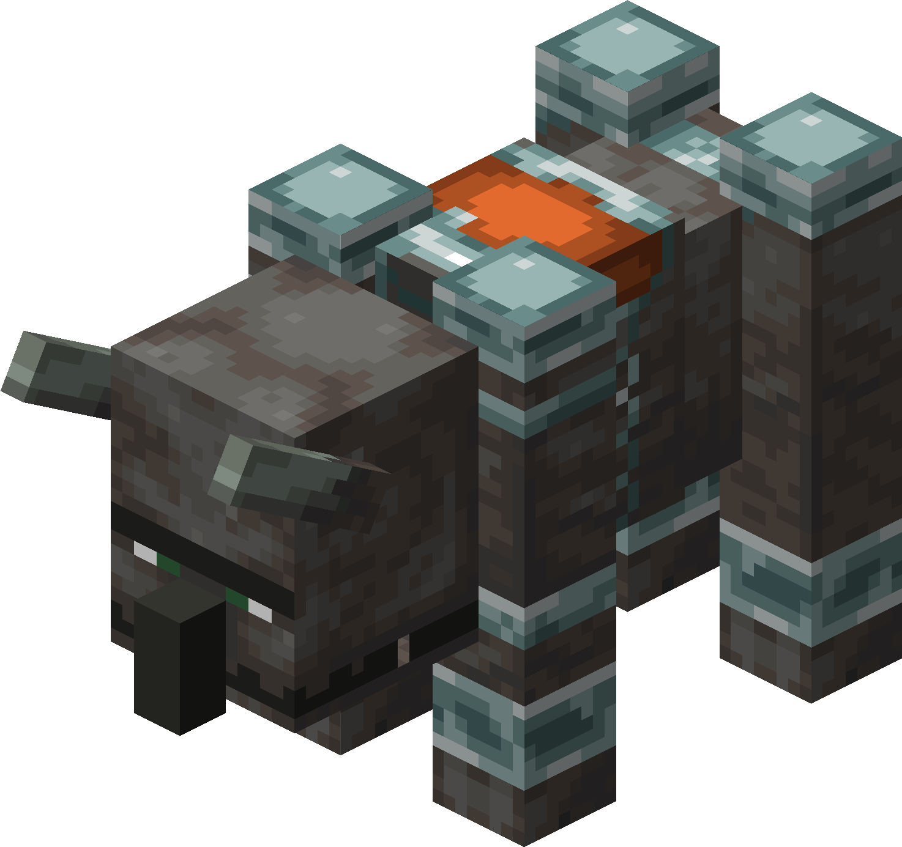

Strongest Minecraft mobs
Photo |
Lore |
Power |
|  | A monster found in Ancient cities and the Deep dark, the Warden stands at 250 hearts and is the most powerful of Minecraft. | Range and both melee power called 'Sonic boom' and causes temporary blindess to those in a 20 block radius. It takes 2 hits for this mob to eliminate the player without armor. When killed this mob drops skulk catalysts. |
|  | Being in the same family as another mob, this monster is a more rare type of creeper only found when struck by lighting, hence the name 'charged creeper'. Although the health of this mob is only 10 hearts (same as the player without effects) this mob is very quiet. |
Stealth based mob that explodes when close enough to the player although they can easily be killed but beware of its 1 shot attack when exploding. When killed this mob drops gunpowder. |
 |
This is a boss that is man made, though to make this boss you need to go to a different dimension called the Nether. With 150 hearts this boss drops a nether star. | Ranged mob that is usually fought with using a bow, this mob shoots wither skulls at you and other mobs while giving the effect 'wither armor'. |
 |
This is the final boss of minecraft. A boss found in the third dimension called "The End" it is a boss with 100 hearts and can only be killed once the areas where he perches gets destroyed, though if you aren't quick enough he is able to respawn them. | AOE boss that usually shoots what is called 'dragon fireball' and if you get too close this boss launches you in the air. |
|  | For this mob to spawn, the player needs to kill a pillager with a banner on its head and get the effect called 'bad omen' go to a village and start what is called a raid. This spawns only later in the raid due to how hard it is to kill with its 50 hearts. | Melee mob that bites players and has roars the launches near by mobs to get launched. This mob not only attacks players but other non-hostile mobs like Villagers, Wandering Traders, and Iron Golems. |
Erin Antes | 9-Emerald